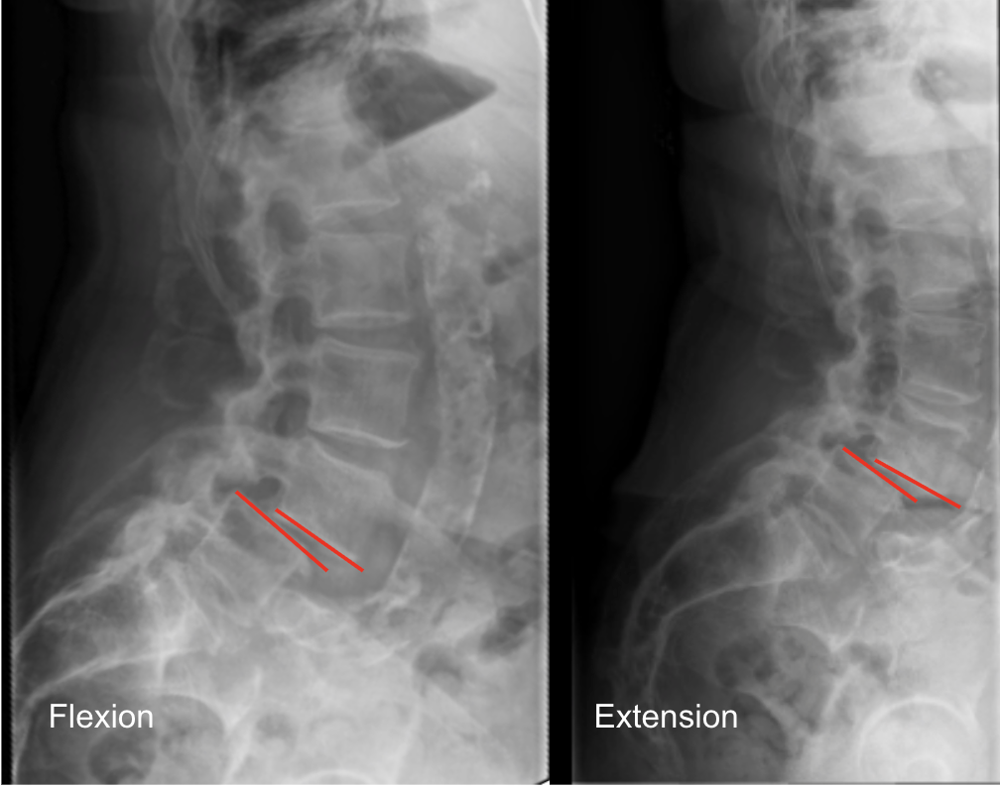

Murphy A, Campos A, Er A, et al. Lumbar spine (flexion and extension views). Reference article, Radiopaedia.org (Accessed on 04 Dec 2025) https://doi.org/10.53347/rID-58306
1) Description of Measurement
Lumbar segmental angulation—also called segmental rotation—quantifies the angular change between two adjacent lumbar vertebrae when the spine moves from full flexion to full extension.
This dynamic measurement reflects the functional rotational mobility of each lumbar motion segment (e.g., L1–2 through L5–S1). Excessive segmental angulation is an established radiographic indicator of lumbar instability, typically caused by degenerative disc disease, facet incompetence, trauma, or post-fusion adjacent-segment motion.
Segmental angulation helps identify the specific level demonstrating abnormal rotation and complements translational instability measurements.
2) Instructions to Measure
3) Normal vs. Pathologic Ranges
Additional Guidelines:
4) Important References
White AA, Panjabi MM. Clinical Biomechanics of the Spine. 2nd ed. Lippincott Williams & Wilkins; 1990.
Dupuis PR et al. Flexion-extension radiography for instability in degenerative spondylolisthesis. Spine. 1992.
Iguchi T et al. Instability and low back pain in degenerative lumbar spondylolisthesis. Spine. 2004.
Swartz EE, Floyd RT, Cendoma M. Lumbar spine functional anatomy and biomechanics. J Athl Train. 2005.
5) Other info....
Segmental angulation is most useful for evaluating:
Flexion–extension radiographs should only be performed after excluding acute fracture on CT.
Excessive angulation often reflects:
Use calibrated PACS tools to minimize parallax and magnification errors.